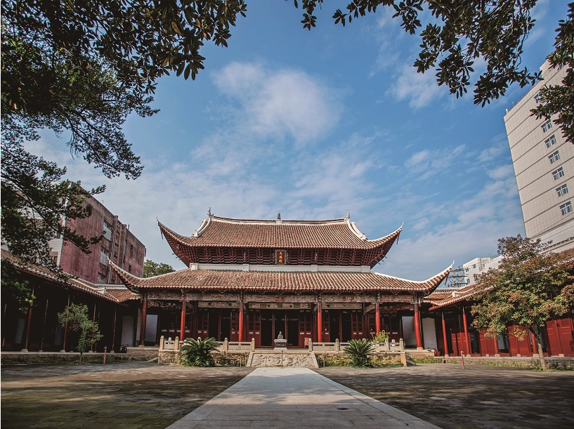
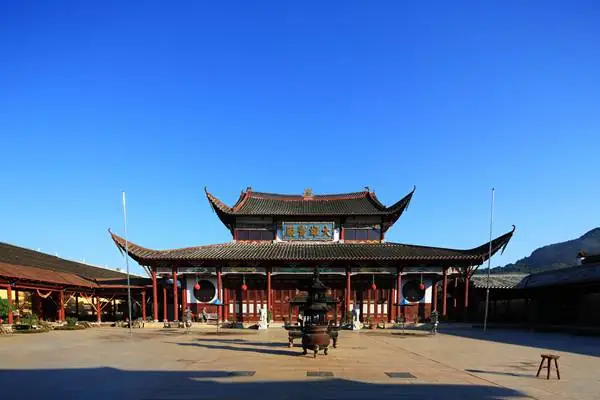
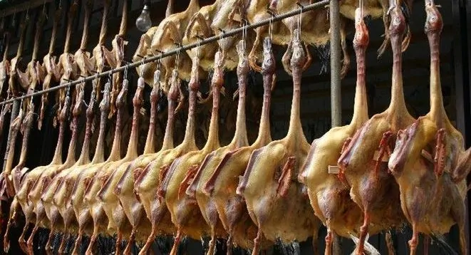
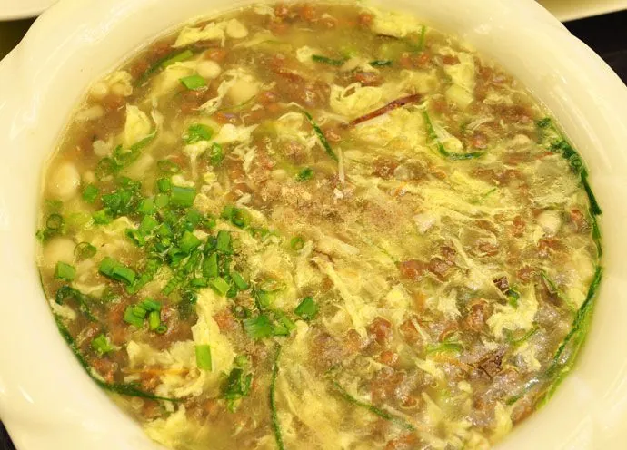

建瓯市，福建省辖县级市，由南平市代管，位于福建省北部，武夷山脉东南面，鹫峰山脉西北侧，东经117°58'45”～118°57'11”，北纬26°38'54”～27°20'26”之间，属亚热带海洋性季风气候，四季分明，雨量充足，春夏多雨，秋冬干燥，总面积4233平方千米。截至2023年6月，建瓯市辖4个街道、10个镇、4个乡，
市政府驻瓯宁街道瓯宁路68号。截至2023年末，建瓯市常住人口42.2万人。建瓯市有着3000多年的文明史和1800多年的建县史，东汉建安初年（196年），汉献帝刘协设立建安县，是福建最早建县的古邑之一。福建历史上第一郡、第一州、第一府皆在建瓯。唐开元二十一年（733年），取福州、建州首字，设立“福建经略使”，“福建”之名由此而来，延续至今。南宋绍兴三十二年（1162年），宋孝宗赵昚（shèn）在建瓯设立福建第一个府治“建宁府”。民国二年（1913年），撤建宁府，并建安、瓯宁两县为建瓯县，1992年，撤县设市。为福建省面积最大、闽北人口最多的县级市，建瓯市是“千年酒城”、“中国笋竹之都”，是全国文化先进县、首批省级历史文化名城、全国十八个千名进士县之一，历代出过1154名进士、6名状元、10名宰辅，现有东岳庙、建宁府孔庙、北苑御焙遗址、迪口值庆桥4个全国重点文物保护单位以及归宗岩、万木林、光孝禅寺、威武门、临江门、通济门、通仙门等旅游景点。
-  建瓯文庙
- 东岳庙
-  光效禅寺
- 古城门
- 光饼
-  板鸭
-  纳底
- 芋饺